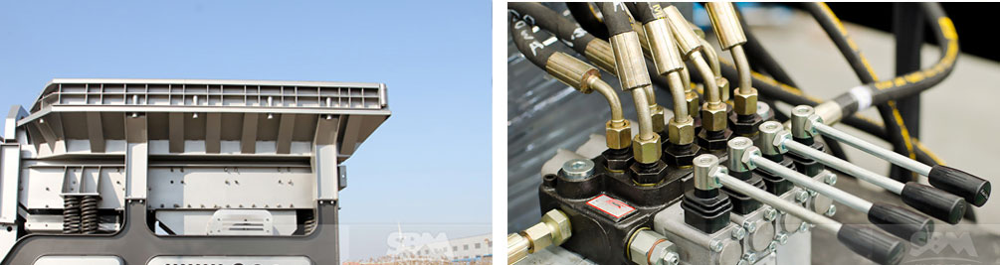

As a collection of material, crushing, conveying, screening in one of the mobile crusher, our mobile crushers for sale in the rock crushing, aggregate production, open pit mining and other work areas with other devices can not match the advantages. Mobile crusher can be flexible and easy to reach the broken line to meet the needs of consumers.
Mobile crusher, also called mobile crushing plant or mobile crusher station, which has provided a new business opportunity for mining contractors, quarry operators, and investors. It can eliminate the obstacles of the crushing places and circumstances in open-pit mining quarries. Besides, mobile jaw crusher has a wide recycling and mining application. It offers high efficient and low cost project plan without environment limit for the client.
Typically, mobile crushers for sale always integrates the crushing, sorting and conveying in a machine. So it can meet the special requirements of clients. The mobile crushers overcomes the restraining factors of crushing site and complex basic configurations. Nowadays, mobile crusher is one of most popular mobile crushing plant used in mining by quarry contractors and mining companies due to its flexibility and automaticity. So many mining applications have proved that mobile crusher can make a difference to global mining industry.
Nowadays, we have become a professional manufacture of crushing and screening machine in the global mining industry. To meet our customers' specific needs, our new type mobile crushing plant malaysia can be equipped with jaw crusher, cone crusher, impact crusher, VSI sand making machine, and vibrating screen. The capacity is from 100 tons per hour to 600 tons per hour. All our mobile crusher feature high performance, reliability, convenient transportation, quick installation, easy operation and simple maintenance.
There are already varied types of mobile crushers for sale for different mining scales. Besides, the transportation and operation length, width and height can be adjusted by choosing suitable model. The maximum speed can reach up to 1.39 km/h and the engine speed will be at 2100kw.There are both low-capacity stone crushing plant and large scale crushing and screening plant, ranging from 40 tph to more than 1000 tph. Engineers will design and install the whole production line according to particular requirements of customers.
If compare the Mobile Crushing Plant Malaysia as people, the upkeep work is extremely crucial for improving efficiency, minimizing machine failure and prolonging the service life. Whether the machine is great or not, it truly is decided by maintenance? May be the very same way. Here, the experts will show quite a few procedures for maintaining the mobile crusher plant to minimize the machine failures and prolong its operating lifetime.

Specialist advises one: lubrication is extremely important and it will be rust protection
As all of us know, it really is bad to become rusty for the machine. In the operating course of action of mobile crusher plant, it really is crucial to possess the lubrication works. Mobile crusher plant's main operating machine in generally adopts the jaw crusher, effect crusher and cone crusher and so on. It suggests that it should adopt the forced lubrication technique to prevent the rust issues of rotary bearing, roller bearing and all gears.
Expert advises two: check no matter whether the machine performs generally
When the machine is in malfunction, it can be simple to harm the mobile crusher's wear components and affecting its typical operation. Inside the operating method of mobile crusher plant, it must verify no matter whether it can be in typical functioning state normally. Irrespective of whether the tyre is loose and no matter if there's effect voice in transmitting gear functioning course of action.
Professional advises three: modify the wear components in time
It must pay attention to change the wear components from the mobile crusher plant to prevent bigger damages for the plant. At other occasions, it must verify the put on parts?ˉ wear level.
Expert advises four: noise troubles on the gear
In the event the mobile crusher plant produces oversize noise or vibration inside the moving approach, it needs to stop at this time and check the machine. Immediately after debugging the failures, it might get started up in line with the starting sequence.
Mobile crushers are mainly used in metallurgy, chemical, building materials, water and electricity, and other materials processing, especially for the highway, railway, water and electricity projects, such as the flow of stone, to create more new business opportunities and reduce production costs.